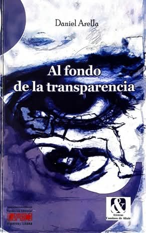

Ensayo · 2024
Desde el inframundo del lenguaje

Este ensayo obtuvo la mención honrosa en el I Premio de Ensayo sobre la obra de Ida Gramcko, convocado por LP5 Editora en 2024. El jurado reconoció el trabajo de reflexión en torno a la obra de la poeta y ensayista venezolana.
La ceremonia de premiación tuvo lugar en Santiago de Chile el 21 de septiembre de 2024. El ensayo explora las relaciones entre lenguaje, memoria y escritura desde la perspectiva de la obra gramckiana.